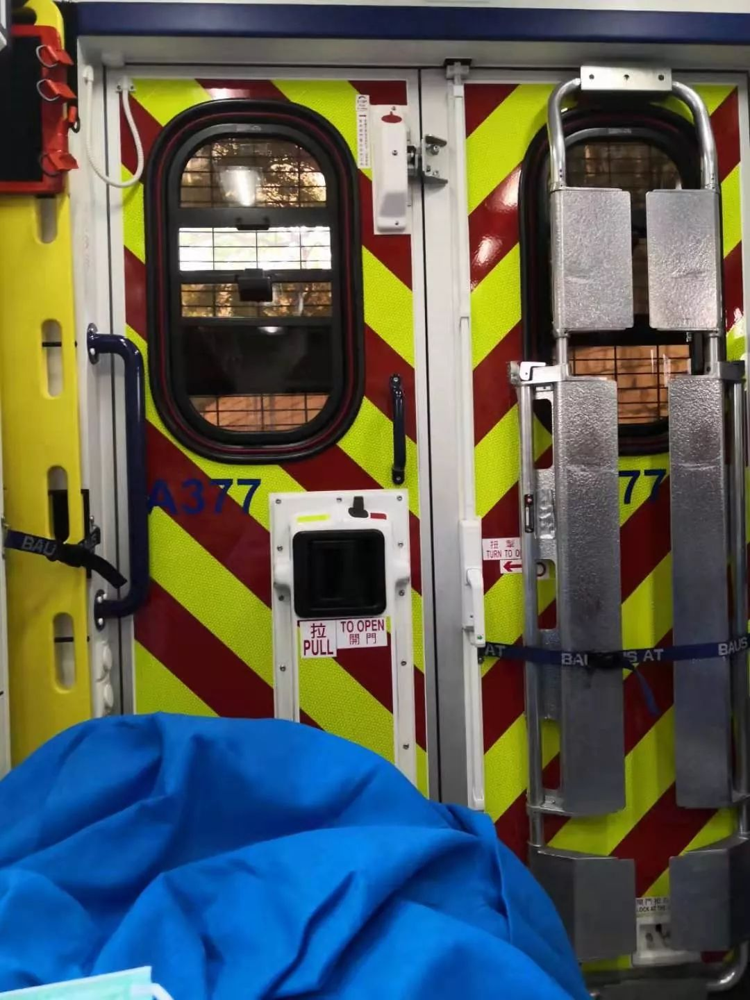
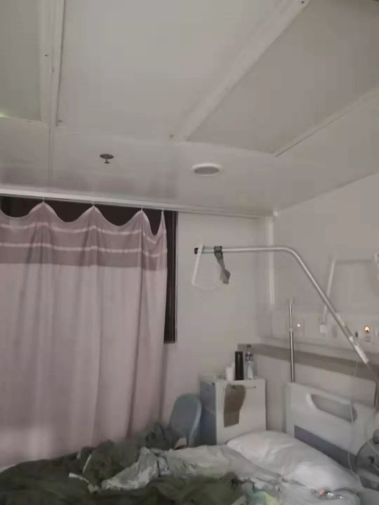

香港特区抗疫实录：削减往来内地交通，争抢口罩蔬菜
原文链接 备份链接 虽然感染确诊人数不多，但因“非典”时期香港淘大花园E座数百人染病事件，不少港人情绪紧绷，他们期待一系列尚未落地的防疫措施能切实见效 文 |《财经》特派记者 焦建 发自中国香港特区 编辑 | 苏琦 1月30日早上7点30 …
当社会规则的制定者不作为的时候，普通人别无选择，“幸运”的人躲过一劫，只从人性百态里掠了个影；而“不幸”的人却只能自面生死。武汉肺炎等事情不使人绝望，真正使人绝望的是这些看似由于客观因素所导致的不幸里面，大多数是本可以避免的不幸，却因为种种人为的原因，它发生了。
我是一个幸运儿，因为我和那些不幸的事情只是短暂地擦肩而过。与他人相比，我的经历已经算很好的了，而我把他们写下来，权当作一个记录，记录我在过去半年里，这个最令人感到嘲讽和荒谬的半年里所目睹的东西，包括近期我在香港医院隔离室里过完的除夕夜，以及去年我从香港回到武汉的路途。
去年十一月中旬的时候，我从香港回了武汉，那段时间我的膝盖还没好，不能跑也不能跳，上下楼梯的时候我的冷汗都能掉出来。不过所幸膝盖有些许好转，出门走路不用拐杖了。就在我以为下半学期的课程我都不用拐杖的时候，香港打砸抢烧的行为达到了最极端，也就是十月底十一月初。这个极端是我自己定的，历史学家政治学家都没这么说过。理由呢？因为在此之前我那帮香港同学们每天的作息是昼伏夜出，早上不起来，晚上跑街上瞎“溜达”。但是从11月中旬开始，他们每天清早起来堵学校的大门，把教室楼道餐厅全砸烂，叫所有人都上不了课。而这种事情碍着我利益了，我管这个叫极端。在此之前，每个人心里都以为这些糟糕的事情不会持续太久，包括我也认为香港大学还能放得下一张书桌，但是事情就是这样，你天真地希望有人能够对你负责，想起你的处境，然后你就会发现，除非你哭地最大声，不然没有人能想起你的利益。我们的学校在连着三四天大门被一部分黑衣人堵了以后，就停学了，因为各个大学都在闹，谁也不想继续开学当竖起来的靶子。接下来就是网课，网上教学和考试，最荒谬的事情由此诞生，学校亲切地为学生提供了几种选择评分的方式，其中一种是可以将每门课都由打分制（ABCDF给分档）变成通过制度（pass/fail,不计入GPA），为的是考虑到有些学生可能会因为学得时间少（为什么会学的时间少呢？）考砸了。这对于像我这样的商科学渣来说是比较友好，但是，它确实不公平。而这也是第二次让我意识到，香港也不全是一个讲究制度的地方，它也讲究认人情，只不过这个人情和内地学生没关系。

我不在校的时间很长，从11月中旬停课开始，我就离开学校回内地了。11月到12月底是我的考试月，大部分时间我都待在武大的教学楼里。内地的大学给我一种安全感，尤其是在食堂里点一份8块钱的丰盛午饭时，让我感觉自己不是一个败家子。除此以外，长期在香港待着，开始让我下意识地学某个地方的方言，小的时候我对于武汉话基本听不懂，大概我是带着一种普通话的优越感长大的，但是从这一次回武汉开始，我全都能听懂了，还会说一点武汉话，大概是怕自己再次被文化圈孤立。
1月初我打算回香港，决定先去南方城市找小李同学，再回学校。而那个时候武汉的新闻是出现了不明肺炎，且这几个不明肺炎患者已经被隔离治疗。武汉的物价没有涨，武汉也没有封城，卖年货的商城里人挤人。我去高铁站的时候，整个高铁站只有我一个人戴口罩，大家看我的眼神很稀奇，以为我有病才戴的。在南城找小李玩的时候，南方突然降温了，晚上我们在街上走，风从我的秋衣领口往里钻，冻得我赶紧喝了一碗感冒药。接着我回了学校，开始一下午的大扫除，等到晚上我开始咳嗽的时候，我心说，不会吧，赶在这个时期感冒了？
开学第一天是1月20日，离除夕只有4天。因为咳嗽，我没去上课，挂了一个最早的校医院的号看病。我没直接去香港的公立医院，因为我不太会说粤语，我也不知道普通门诊怎么挂号，会不会要转介信，至于急诊我更是有心理阴影（上次看急诊我等了6个小时）。于是20日早上我去校医院了，此时武汉肺炎在香港已经确诊了几例，人人自危，校医院的没个人都戴着口罩。我先填写了一个旅行表格，澄清我之前去过武汉，且咳嗽。医生看了我的舌头，听了我的肺音，跟我说没事。我问她要不要去医院，她说不用，我就回来了。

接下来几天，我每天不是在吃药，就是在睡觉，课我也不敢去上。我知道香港人对咳嗽和感冒有多敏感，如果是一个咳嗽的内地人，他们可能更加接受不了，即便这个内地人被医生告知了不用做检查。于是我就踏踏实实在宿舍里待着，天天都在捂汗和发汗。那个时候我最担心的其实不是自己是不是肺炎，因为我知道自己大概率不是，在南城被风吹着凉的感觉我记得很清楚。但是我担心接下来的行程，我已经定好去国外看我爸妈了，我们已经一年多没见了，每天吃饭的时候我都在鼓励自己赶快好起来，这样才能出远门。
然后到了23日，我的咳嗽稍微好转，但是我的家人不放心，坚持让我再复查一遍。我就又去了校医院，这一次的医生不会说普通话，她很客气的告诉我，“I can only speak Cantonese or English.” 但是之前护士站的人告诉我，校医院的医生当然都会说普通话啦。她这个态度就让我很懵。我的英语没问题，但是当时我就想知道，她做医生是不是只服务香港人和外国人。于是又查了一遍，她又告诉我没问题。最后我跟她说，明天我就要坐飞机出国了，不过我没想好要不要取消机票，她保持微笑没理我。当天晚上我和爸妈商量，把机票取消了，特殊时期我也不跑出去添乱，免得飞机上其他人心慌。但是第二天一大早，校医院就疯狂给我打电话，我接了电话他们问我在哪里，我说在宿舍，对面人喘口气，接着昨天刚讲过的跟我说不用做检查的医生告诉我，因为香港的疑似病例的要求更严格了，她就把我的案例上报给CHP了，叫我不要离开宿舍，等着CHP联系的医院救护车来接我。我跟她说好。

香港的办事效率是很快的，上午10点多我接的电话，下午1点救护车就到了。全宿舍的同学看到救护车都吓了一跳，当我戴着口罩走出房间想要上厕所时，厕所里所有在刷牙的女生全都惊恐地撤退。而且有意思的是，这个现象一直持续到现在，我已经从医院出来了，她们看到我还是快速撤离。这大概就是救护车的威力，救护车来了就说明此人危险，没有救护车就啥事没有。
救护车到宿舍楼下，半天不上来，我就一直在房间里等着。终于三四个医护人员进来了，他们穿着防护服，戴着口罩，面前还拉着一个面罩，手上戴着手套，背上背着医疗包，以一种生化危机的戒备状态走进来，警惕地看着我不咳嗽也不虚弱地背上小书包跟他们一块走了。到了救护车上，他们很体贴地让我躺在床上，给我盖上被子，手指上夹一个夹子测量血压，同时跟我核对我的个人情况。从之前咳嗽到等待救护车，我一路上都没哭，但是在车上我哭了，偷偷哭的，因为当时有同学问我为什么之前不戴口罩，也有人在宿舍群里发问救护车为什么来，而我从宿舍离开的时候，宿管的阿姨见到我往后退了三米远，在楼底下，离救护车50米开外的地方一群人站在一起看着我。这是我第一次感到难受。咳嗽我不难受，救护车来了我要一个人过除夕我也不难受，但是那一瞬间，我特别难受。我一边哭一边把该回复和道歉的信息都发了，他人的情绪我都理解，我知道我错了，我应该从第一次看完医生开始就每天戴着口罩出门，即便医生没这样说，我也应该自觉地这样做。但是从回复完这些消息，道歉和解释之后，我就不想看手机了。

救护车到的时候，几个医护人员抬着我的床，推着我进医院的隔离室。医院为我提供的是一个很难得的负气压隔离室，而且面积很大，比香港一晚上三四百的酒店大多了，差不多30平米，拥有一个独立的厕所。房间角落里是一个24小时监控摄像头，床边有个对讲机，方便随时沟通。我心里很平静，进去以后躺着，很快有护士进来，取我的上呼吸道样本。第一个是鼻腔样本，她直接拿一直喷气的管子捅进我鼻子里，最开始我忍着，但很快我生理眼泪就流出来了，大概是我太娇气。接着做口腔的样本。整个过程里护士都用不太熟练的普通话安慰我，这让我安心了很多，后来离开的时候，我也很感激他们一直在安抚我。当晚还做了抽血，尿液取样，肺部x光片以及一些血压体温的检测，都是在隔离室中进行的。这些护士取好样以后，在隔离室外面的消毒间消毒，换手套，洗手，然后再穿戴好离开。
这个过程里我无心看窗外的景色，一直到晚上吃完医院的饭，（辣子鸡丁+白菜+白饭+热汤），我才发现我所在的房间很高，大概有好几十层，因为窗户外面的出租车看起来像蚂蚁一样。

负气压病房的中央空调很冷，晚上吹得我脑袋疼，以至于我连春晚也没看，蒙上脑袋缩起来就睡了。忘了说，医院的被子很薄，根本顶不住冷气，我生怕自己被吹地咳嗽加重，于是我前后要了总共5张被子盖着睡，大概护士们觉得我这个人事很多。

半夜3点有护士今来给我测体温，告诉我不发烧了，这句话搞得我有点恼火，因为从始至终我就没发烧过，不知道这些护士为什么对疑似病例有个刻板印象，看谁都以为是发烧进来的。第二天早上7点病房灯亮了，我刷牙洗脸以后等到8点，早饭送过来，是一个萝卜糕和白粥，纸条上写着“新春萝卜糕”，如果不是新春两个字提醒我，我都忘了这是大年初一的早上。10点结果出来了，大夫用对讲机告诉我，我的结果是阴性，但是我还要再查一遍。那一刻我有点恐慌，我就怕自己永远也出不去了，但是我也没时间感受自己的情绪，我得第一时间把检查结果告诉宿舍里的同学，还有宿舍的tutor，我的父母，于是我一上午用手机联系好了。发完消息又觉得累，说不出来哪里不舒服，把手机放得离自己远一点，仿佛就可以离现实远一点。大家都知道我去过武汉，都担心我的身体和对自己的影响，但是也没有人关心，我的家明明在北京，为什么我不回家。

（新春萝卜糕+白粥）
下午我又做了一次鼻腔取样，这次我克制着没哭，那个善良的护士安抚我说没事了，不要紧。这种偶尔的瞬间让我觉得香港还是很好的。但是我也知道，幸好我是一个有香港身份证的学生，而不是一个来香港旅游的游客。这两种待遇，恐怕是不一样的。当晚我待得有些焦虑和惶恐，而我爸妈一夜没睡在安抚我，终于等到大年初二这天，上午十点大夫告诉我，我没事可以回去了。我感觉自己一直崩着得神经总算放松下来了，于是再次通知父母、宿舍同学、宿舍的tutor、宿舍的counter，告诉他们我要回去了。
走之前我去缴住院费，因为我是香港居民（非永久），所以两晚住院费，伙食费加上各种治疗费用是300多港币，真的很亲民。交完我回了宿舍，counter检查了我的体温才让我进去，我的楼层全消毒了一遍，我把去过医院的衣服收起来等着之后消毒人员来消毒，疲惫地收拾完睡了一觉。这是2020年的大年初二，但是我感觉不到过年，也感觉不到团聚，只是觉得疲惫，就睡了。
这之后，我得知我们层有同学把当时救护人员接我走的现场拍下来了，并且发在了港大local学生自己的telegram群里，有4千多的阅读量。回到宿舍，同层基本没人了，仅剩的一两个local看我走出房间，他们就像飞一样回到自己的宿舍不出来，即便他们知道我的结果是阴性，但是结果似乎并没有什么意义，因为大家知道我是内地人。
同时港大也开始采取一些举措，要求所有内地学生返港以后自我隔离14天，这意味着为了避免耽误上课，学生要在开学前两周，也就是疫情可能还在传播扩散的时候，冒险坐高铁飞机回来。而且，学校最初不提供任何住宿，只是最近提供了一部分酒店，而这个酒店是先到先得，来晚的就自己找酒店了。与此同时，local同学在他们的telegram里面开始愤怒，说有些内地生居然还要住宿舍使他们的安危处于水火之中；不住宿舍了，住酒店，居然不好好隔离，擅自出来，给香港市民带来危险；自己找酒店，明明就是应该的，居然好不要脸向学校要补助费用。是啊，他们说的有道理，内地学生为了不饿死自己擅自出来找饭吃，确实是过分，为了香港人的安全，他们就应该永不出门，在屋里饿到地老天荒才对。

但是，我也知道，这些local和nonlocal之间的对峙，实际上并不是文化、人性、成长经历等等因素造成的，真正的原因在于制定规则的人，他既不能保护内地生的上学权力解决他们本可以没有的经济负担，也不能保护本地生的安危，规则制定者无法权衡好不同团体的利益，最后的结果当然是大家永分你我，永远无法互相理解，永远讨厌彼此和对峙。而这种情况不止在学校，在如今的疫情重灾区一样，错误的永远都不应该是人性-—–因为人性就是这样的，规则的存在意义就在于约束人性自私和恶的一面，错误的是规则制定和执行者的失责，是它的失责让人性最糟糕的一面被唤醒。
原文链接 备份链接 虽然感染确诊人数不多，但因“非典”时期香港淘大花园E座数百人染病事件，不少港人情绪紧绷，他们期待一系列尚未落地的防疫措施能切实见效 文 |《财经》特派记者 焦建 发自中国香港特区 编辑 | 苏琦 1月30日早上7点30 …
原文链接 备份链接 从2003年抗击SARS疫情起，每逢新的疫病出现，香港人总会联想到“淘大花园”，这座被符号化的楼盘牵涉的社会现实，对于理解当下香港特区防疫体系的压力仍有意义 2月初，食物环境卫生署开始在香港大街小巷挂出相关宣传标语。 …
原文链接 备份链接 作者 | 孙宏超 编辑 | 康晓 出品｜深网·腾讯小满工作室 欢迎下载腾讯新闻APP，阅读更多优质资讯 _编者按：_牵一发而动全身，面对疫情，需要中国全行业上下游企业携手共度难关，深网推出《共克时艰》系列报道，是为第一 …
原文链接 备份链接 数据来源：腾讯新冠肺炎疫情实时追踪 近日，武汉红十字会的热搜稳升不降， 缘起于接受全国3.4亿捐赠，却仅调拨2000万的数据； 昨日，湖北省红十字会成为众矢之的， 物资调配、透明度均大受质疑， 其回应也漏洞百出。 据 …
原文链接 备份链接 1月30日，曾患新型冠状病毒感染的肺炎的北京大学第一医院呼吸和危重症医学科主任王广发在北京地坛医院治愈出院。他是北京市第5名治愈出院的新型冠状病毒感染的肺炎患者。新华社发（任超 摄） 采访·整理 秦珍子 编辑 张国 国 …